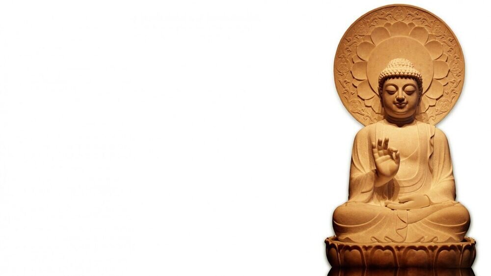
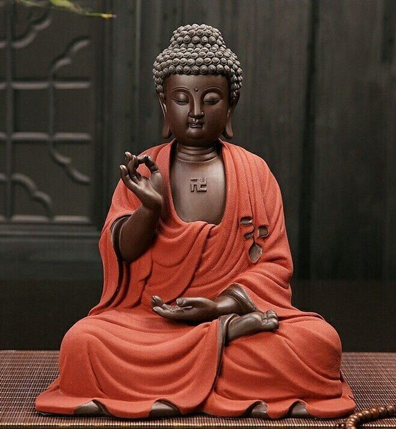
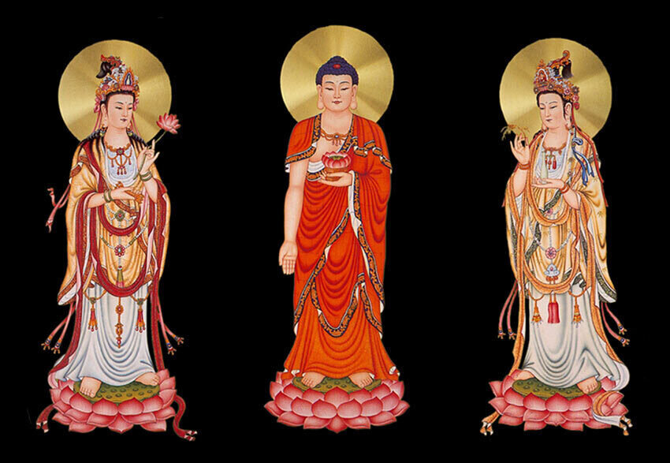

El linaje
Nuestra tradición

La Comunidad Budista Camino del Dharma forma parte de la gran tradición del Budismo, cuyo origen se remonta al despertar del Buda Śākyamuni hace más de 2.600 años. Desde entonces el Dharma —las enseñanzas del Buda— ha sido preservado y transmitido de generación en generación como un camino para comprender el sufrimiento humano, cultivar la sabiduría y desarrollar una vida basada en la compasión.
Para nuestra comunidad, el linaje no representa únicamente una continuidad histórica. Es una transmisión viva que se expresa en la práctica, la ética, el estudio y la manera en que habitamos la vida cotidiana. Más que conservar una tradición del pasado, buscamos mantener vivo su sentido en el contexto contemporáneo.
Mahāyāna: un camino de sabiduría y compasión
Camino del Dharma se inscribe dentro de la rama Mahāyāna, una de las grandes corrientes del Budismo.
El Mahāyāna sitúa en el centro de la práctica el cultivo inseparable de la sabiduría y la compasión, entendiendo que el despertar personal cobra sentido cuando contribuye también al bienestar de los demás. Desde esta perspectiva, la práctica espiritual no implica alejarse del mundo, sino aprender a vivir en él con mayor claridad, responsabilidad y apertura hacia todos los seres.
Dos tradiciones, un mismo camino
Nuestra comunidad integra de manera armónica dos grandes tradiciones desarrolladas históricamente en China: Chan y Tierra Pura.
Durante siglos, ambas escuelas han coexistido y se han enriquecido mutuamente dentro del Budismo chino. Mientras una enfatiza la experiencia directa mediante la meditación, la otra fortalece la confianza, la compasión y el cultivo del corazón. En Camino del Dharma entendemos estas dos vías como expresiones complementarias de una misma enseñanza.
Budismo Chan
Meditación · Atención consciente · Experiencia directa

El Budismo Chan pone el énfasis en la experiencia directa del despertar mediante la meditación, la observación de la mente y la integración de la práctica en la vida cotidiana.
Nuestro linaje espiritual se remonta al Buda Śākyamuni, quien transmitió el Dharma a sus discípulos hace más de 2.600 años. A través de una sucesión ininterrumpida de maestras y maestros, estas enseñanzas llegaron a China con Bodhidharma (Da Mo), reconocido como el 28.º maestro del linaje budista en la India y el primer maestro del Budismo Chan en China.
Desde entonces, la transmisión del Dharma ha continuado preservando no solo las enseñanzas, sino también la experiencia viva de la práctica contemplativa.
Algunos maestros representativos del linaje Chan
A lo largo de más de dos milenios, el Dharma ha sido transmitido por innumerables maestras y maestros. Los siguientes nombres corresponden a algunas de las figuras que desempeñaron un papel decisivo en la consolidación de la tradición Chan.
- Bodhidharma (菩提达摩 | Da Mo) († 536)
- Huike (慧可) (487–593)
- Sengcan (僧璨) (520–612)
- Daoxin (道信) (580–651)
- Hongren (弘忍) (600–674)
- Huineng (慧能) (638–713)
A partir del maestro Huineng, la tradición Chan continuó desarrollándose mediante numerosas generaciones de maestras y maestros, expandiéndose posteriormente hacia Japón, Corea y Vietnam, donde dio origen al Zen, el Seon y el Thiền, respectivamente.
Budismo Tierra Pura
Compasión · Recitación consciente · Transformación interior

La Escuela de la Tierra Pura constituye una de las grandes tradiciones del Budismo Mahāyāna y representa, junto con el Chan, uno de los pilares espirituales de nuestra comunidad.
Su práctica encuentra inspiración en el Buda Amitābha, símbolo de la luz infinita y la compasión ilimitada. Desde nuestra comprensión, la Tierra Pura puede entenderse también como el cultivo de un estado de conciencia caracterizado por la serenidad, la claridad, la confianza y la compasión. En este sentido, la recitación consciente del nombre de Amitābha constituye un método para desarrollar la atención, transformar la mente y despertar las cualidades más nobles del ser humano.
Algunos maestros representativos del linaje de la Tierra Pura
Diversas generaciones de maestras y maestros preservaron y desarrollaron esta tradición. Entre quienes desempeñaron un papel fundamental en su consolidación se encuentran:
- Huiyuan (慧遠) (334–416)
- Tanluan (曇鸞) (476–542)
- Daochuo (道綽) (562–645)
- Shandao (善導) (613–681)
Desde China, esta tradición continuó expandiéndose hacia Japón, Corea y Vietnam, inspirando a millones de practicantes. Más allá de las diferencias culturales, todas estas escuelas comparten una misma convicción: la posibilidad de cultivar una mente libre del miedo, el odio y la confusión, haciendo de la propia existencia una auténtica Tierra Pura, aquí y ahora.
Una tradición viva para el mundo contemporáneo
La Comunidad Budista Camino del Dharma integra las tradiciones Chan y Tierra Pura como expresiones complementarias de una misma enseñanza.
La meditación, la recitación consciente, el estudio del Dharma, la ética y el servicio constituyen prácticas que se fortalecen mutuamente y permiten desarrollar una vida más consciente, compasiva y equilibrada.
Hoy continuamos esta transmisión en Colombia y América Latina, promoviendo un Budismo fiel a sus raíces y, al mismo tiempo, abierto al diálogo con los desafíos del mundo contemporáneo. A través de la práctica comunitaria, la formación, los retiros, la educación y el compromiso con el bienestar colectivo, buscamos hacer del Dharma una experiencia viva, accesible y transformadora para todas las personas.